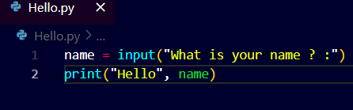

- Functions in Python:
- built-in functions
- user-defined functions
- Argument: Input to a particular function
- Bugs : mistake while writing a code is called bugs.
- We can use varables to return values from user inputs.
- Variables: storage containers that store various type of data
- Operators: +, -, *, %, ! etc are some operators used for computing or comparison <, > etc
- Comments in python: comments are given using # for a single line comment
 multi line comment requires "".
multi line comment requires "".
- We use pseudocode to otline our code in more user friendly language, used to structuring code when you have no idea to write the orginal code.
- First Program: Hello.py
- 

The print function automatically uses an extra line after it executes once i.e., it thinks you want to use the next line after using it once.


Parameters:
The end="" , in python helps remove the extra space from the end of any text.


Another is sep="" , separator, and line end are named parameters.
Another interesting thing is the F:string,
format string


Imagine if a user doesn't cooperate then in that case we can remove extra space or only take input as a particular data type only
we use .strip() function


Now for Capitalizing the name of the userif they enter it wrongly
but this does'nt capitalize eerything so what we do is use another built-in functions in python


To remove extra lines of code we use functions in the same variable

to split users name into first name and last name
we use the split() function; Here you need to change the variable name you take into the print function, for example first and last!


It only input that particular part of the total inputted string.
The python programming language supports interactive mode, it doesn't need saving it directly executes in terminal in the python interpreter.
Python supports mathematical operations and integers nd many more things with numbers
so lets make a simple calculator
Calculator.py


What is happening here? Is the math incorrect? No!!, the python is actually concatenating 2 strings.!!
So what can we do is..


We can round the floating point numbers which are useful for calculation in bigger scenarios.
round(number[, ndigits])


Functions in Python:
User-Definde functions:
Syntax:


Using parameters in Functions:


More Precisely this is what we can do


Return keyword